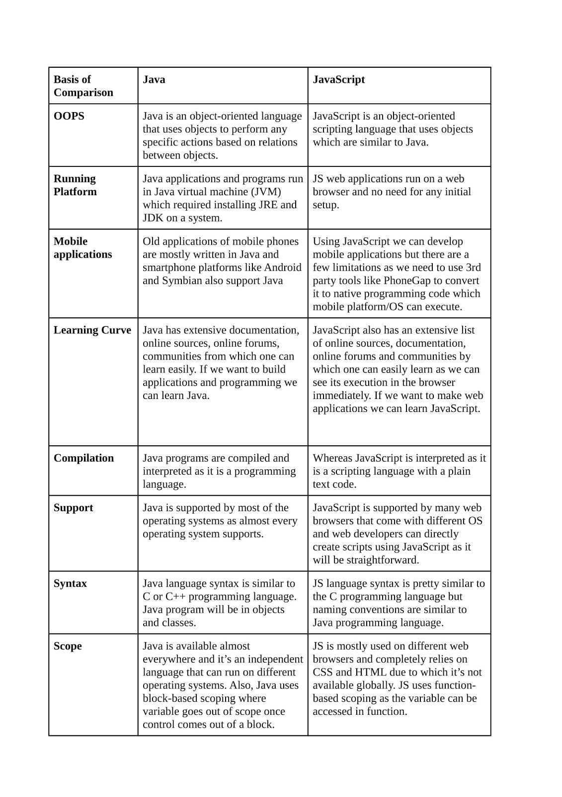

A report from the course DA377B
S01
Did you know before about the techniques Git, GitHub, Markdown and/or GitHub Pages?
Yes, except for GitHub Pages. We have used Git/ GitHub since the beginning of our programme for all our projects. I have heard of Markdown, but never used it. I have heard of that while researching in our Software Engineering 2 project. I didn’t know about GitHub Pages before. I knew it as a term but not their purpose or what to do with them.
Have you ever created websites before?
Yes! During our Software Engineering 2 project I was part of the Unit Group and our task was to create an android app and a website. I was part of the subgroup dealing with the website.
Briefly explain your experience and knowledge of web application development.
We first learned about web application in our Software Engineering 2 course and our Network Application course. We worked with web servers and applications. We learned different API , like Restful API, for web servers and how to work with them. We also worked with Java servlets and with HTML to design our web applications.
What is your TIL for this course section?
My TIL was the GitHub Pages. I didn’t know much about them or how to work with them. Now I know a little bit more about them and what they do.
S02
Have you any previous experience of HTML, CSS and/or JavaScript?
Yes! During our Software Engineering 2 project I was part of the Unit Group and our task was to create an android app and a website. I was part of the subgroup dealing with the website.To build our website we used HTML and Css for the frontend and we used Javascript for the backend part of the website.
Explain the role of HTML, CSS and JavaScript in web development.
HTML provides the basic structure of sites, which is enhanced and modified by other technologies like CSS and JavaScript.HTML is at the core of every web page, regardless the complexity of a site or number of technologies involved.HTML stands for HyperText Markup Language. "Markup language" means that, rather than using a programming language to perform functions, HTML uses tags to identify different types of content and the purposes they each serve to the webpage.
CSS dictates how the HTML elements of a website should actually appear on the frontend of the page.HTML provides the raw tools needed to structure content on a website. CSS, on the other hand, helps to style this content so it appears to the user the way it was intended to be seen.
JavaScript is a logic-based programming language that can be used to modify website content and make it behave in different ways in response to a user's actions.Most of the dynamic behavior you'll see on a web page is thanks to JavaScript, which augments a browser's default controls and behaviors.
Give a brief explanation of how the browser, the HTTP protocol and the web server interacts.
When we brows the internet, a web browser acts as a client that sends When we brows the internet, a web browser acts as a client that sends receives request, process it and sends back a respond to a client/web browser.
What is your TIL for this course section?
I have learnt how to set up my own GitHub page and how to style it using HTML and CSS.
S03
Do you have any previous experience of client side JavaScript?
No! I haven't been working on client side javascript before.
Can you compare and relate the JavaScript language to any other language you know?
During my studies I have only worked with Java. Both languages require the developer to code in terms of objects and their relationships to one another. By extension this gives both languages access to techniques like inheritance, encapsulation, and polymorphism. Both languages can be used in aspects of front-end development. JavaScript can be embedded directly into HTML, implemented as a framework or library; Java can be used as a Java applet. Both languages can be used on the server-side. Java has long been used to power back-end technologies like Apache, JBoss, and WebSphere. Node.js has become a launch pad for JavaScript-powered servers.
Java is considered a compiled programming language. JavaScript is considered an interpreted scripting language. The difference is in the implementation: Java is compiled into bytecode and run on a virtual machine, whereas JavaScript can be interpreted directly by a browser in the syntax it is written. Java uses static type checking, where the type of a variable is checked at compile-time. The programmer must specify the type (integer, double, string, etc.) of any variable they create. JavaScript, like most scripting languages, uses dynamic typing, where type safety is verified at runtime. It is not required for a programmer to specify the type of any variable they create. Java makes use of multiple threads to perform tasks in parallel. JavaScript, particularly as it exists as Node.js in server-side applications, handles concurrency on one main thread of execution via a queue system called the event loop, and a forking system called Node Clustering.
Describe how you worked with the coding exercise, what grade do you aim for and how did your code turn out to be?
I followed the instructions given to us, as well as researching on my own about different concepts that I didn't know before, likeJavascript objects and interactive images. I aim for grade 5 and I think my code turned out to be good.
What is your TIL for this course section?
I learned:
- how to make a dynamic website
- to work with JSON files in Javascript
- to work with Javascript object
S04
Tell me about your previous experience on node/npm or any equal programming tools.
I don't have any previous experience with node/npm before this assignment. The only previous experience I have had is with Java.Java is an Object-Oriented language needs to be compiled and run inside JRE (Java Runtime Environment) whereas Node JS is a cross-platform runtime system and environment for applications written in JavaScript. Java is strictly a server-side language which has nothing to do with the browser, whereas Node JS can be used on client and server side efficiently. Java is heavily used for building complex web-based application with an already provided framework built using Java whereas Node JS is best suited for real-time collaborative drawing or editing applications like Google Docs.
How do you feel about working with JavaScript, Node and Express?
I feel this is a great experience and opportunity for me to learn new concepts in web development.
Explain how you did take on the coding assignment, did you have a plan and did it work?
I have been reading lectures, documentation and code exaples at the coding forums.What grade did you aim for and was it a difficult level?
I am aiming for grade 5, and it was a bit difficult in the beginning.
What is your TIL for this course section?
I have learned how to set up EJS server and accept and respond to HTTP requests. I have also learned how to set up page dynamically using EJS template files.
S05
How do you feel about PHP as a programming language?
It was fun working with PHP. For me, it felt like any other language at the beginning. It is hard at first use since we did not know anything about it but it gets better after some practise. Something I noticed about PHP is that it is easy to work it into your HTML file, since it can basically be placed anywhere on the page.
Can you compare PHP to other languages you know?
It is quite similar to Python and Javascript(mostly to Python). It is quite different from Java, the language I am used to, for exaple in declaring variables.
Describe how you took on the coding exercise, what grade did you aim for and are you satisfied with the result?
I took pretty much the same plan as in the last coding exercise. However, the lectures I found were only in Swedish and therefore not very helpful.
What is your TIL for this course section?
I learned:
- How to use PHP in its basic form
- How to run PHP with the XAMPP package
- How to access the MySQL database in the XAMPP package
S06
What is your own opinion on popularity of programming languages and what are your thoughts of future popularity among programming languages?
In my opinion popularity is a good thing, beacuse that means that more people are involved with that programming language and so they can help each other. I think that in the future we will have less programming languages. I think that new languages that combine multiple existing languages will be created.
What will be your own choice for selecting future programming languages?
Depends on the project scale and type. I am interested in programming languages for which I feel they suit the current need I have.
Do your own investigation on https://trends.google.com to customize your own comparison on programming languages (or frameworks) and elaborate on the results.

If you were to recommend a language/framework/technology to your potential employer and your next large project, what would it be and how would you “sell it”?
It is hard to recommand one since I do not know many programming languages. Every programming language has its benefits and drawbacks. For now, as a web programming language I would choose PHP.
What is your TIL for this course section?
Overall, I didn't learn much in this section. Just the existence of different frameworks.
S07
Try to explain the platform .NET (C#, ASP.NET) to a skilled programmer, but newbie to this Microsoft technology.
.NET is a very extensive framework with a lot of built-in ways of interacting between components of a project. There is loads of support for things like dependecies and testing.
Elaborate by comparing .NET technologies with the other technologies we learned during the course.
Using .NET seems to allow for functional code pretty much EVERYWHERE in whatever you are creating. Languages like PHP are not so versatile as to be used in things like console apps etc.Describe how you took on the coding exercise, what grade did you aim for and are you satisfied with the result?
I took the same approach to the coding exercise as before. I aimed for grade 5 in the console part and for grade 4 in the webapp part.
What is your TIL for this course section?
I learned:
- How to code in C#
- How .NET generally works
- How to create a web application in ASP.NET using the MVC template
S08
I performed the analysis with my groupmate Martijn. We chose the following three websites:
Website 1: https://mightyteapot.tv/
Website 2: https://www.guildwars2.com/
Website 3: https://github.com/
Website 1 is the personal website of a professional programmer. I am not sure whether this person is a professional web programmer or if they program other types of applications. Website 2 is the website of a (relatively) large video game company. This company most likely has professional web developers working on this website full-time. Website 3 is the website of GitHub, the leading online VCS platform in the world. As GitHub is a place to gather for programmers, they likely have access to some of the best programmers in the world. I expect there to be a team of expert web developers working on this website full-time.
My data sheet can be found here.
For the Lighthouse results I found the following: Website 1 had a very high performance score but scored lower than the other websites on the remaining criteria. Website 2 had similar results on the accessibility score. All wesites had a moderate average, with website 3 scoring the highest.
For the Pagespeed Insights results I found the following: Website 1 had a very low overall score. It was the only website for which there was no field data available, so this might explain the low score. Website 1 also had a low score on the First Meaningful Paint of the page. Website 2 had a good score on the First Input Delay, which I also noticed when regularly loading the page.
For the Chrome DevTools results I tested all pages on the Slow 3G setting. The loading times were vastly different, with website 2 having a very long load time. However, this page looked completely accessible very fast after reloading, so I suspect the long load is caused by components that are not necessary for the page to function.
Regarding my test suite: I found Lighthouse especially interesting since it provides such a wide set of interesting data and improvement suggestions, from SEO to performance. The Chrome DevTools network area seemed interesting to be able to look at pages very specifically: what loads first? how will that look? etc. PageSpeed Insights seems to be really useful for giving meaningful suggestions for improving load speeds.
Website 1 needs to look at their First Meaningful Paint, since it took quite a while for the page to be actually usable. Loading interactive elements first would be a good strategy to do this. I suggest both website 1 and website 2 look at their SEO, since these both had a lower score on that criteria. It could be improved by adding tags and similar components to the pages. Both pages would benefit from having a better SEO, since it will likely generate more traffic and more interest.
What is your TIL for this course section?
I learned:
- Of the existence of the three tools used in the above analysis
- To interpret the results given by the tools
- What the general criteria of a good website are in terms of performance
- Some tips and tricks to improve website performance
S09
Elaborate on a few (3-5) different security issues or concerns, from your own experience, related to web application security and relate them to the OWASP top ten.
Issue 1: Input Sanitizing. This is something I don't do enough. In the OWASP top ten this vulnerability is number 1.
Issue 2: Having safe URLs. In my experience I quite often get data straight from the URLs , which is not a good idea since this is very open to injection. In the OWASP top ten this would fall under injection (number 1) and possibly XSS (number 7).
Issue 3: Serializing and deserializing of objects. I haven't considered this to be a vulnerability. In the OWASP top ten this vulnerability is number 8.
Summarize by providing your own guidelines to a new web programmer on the topic “The essential guidelines to follow to create secure web applications”.
So the main guidelines I would give are: sanitize your input, practice the principle of least privilege, move any data through the safest possible channels, make sure you configure everything as safe as possible.
What is your TIL for this course section?
I learned:
- The existence of the OWASP top ten securtiy vulnerabilities
- Of the existence of several vulnerabilities.
S10
The implementation of this project was a bit hard because of the choice we made to use PHP and Firebase. This is a combination that we were not used too and also couldn’t find a lot of documentation about. We had to dig up different articles to learn how to connect and retrieve/manipulate data in Firebase using PHP. This was not very easy at the beginning since there is not a lot of documentation about PHP and Firebase together. Styling of the website was relatively easy and fun, since we knew how to work with HTML and CSS. The team work was good, since we had worked together a few times before in other projects.
I found the course to be quite helpful. I learned the basics of new programming languages, which in itself is a good thing for programmers. I learned how to use HTML, CSS, JavaScript, Node, Express, PHP, the XAMPP package, .NET, ASP.NET, C# ,etc. The only drawback I would say it was the speed and the amount of new information that we had. Some of these new programming languages that we learned were not so easy to grasp quickly and we didn’t have time to properly learn about them. If I had to suggest an improvement it would be to have less new languages to work with, so we would have more time to properly learn the new programming languages. Also, I would say that since we didn’t work with any book having an exam is just a stretch. I don’t think an written exam is necessary in this course. On a scale of 1-10, I would give this course an 8.